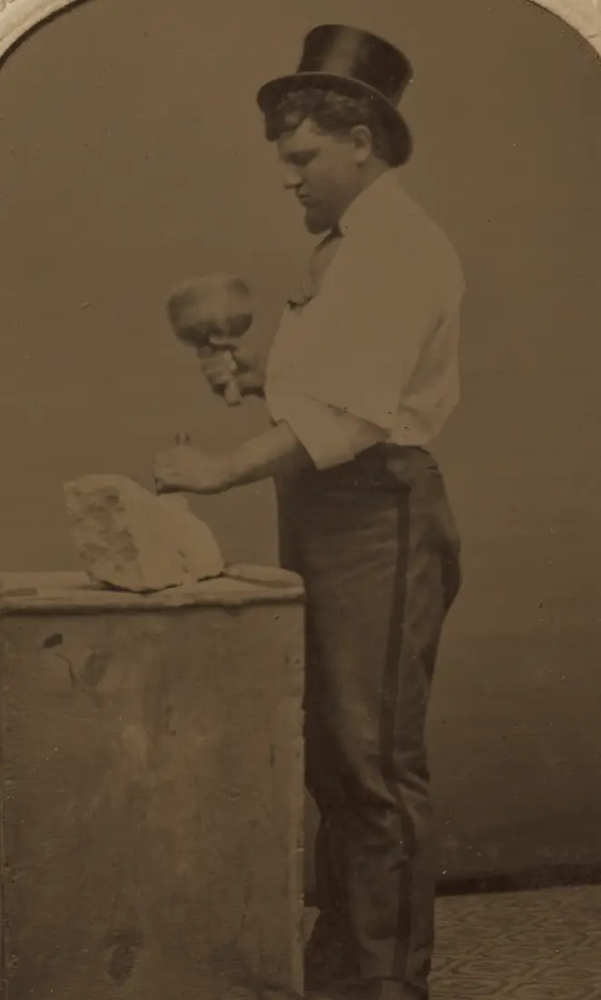
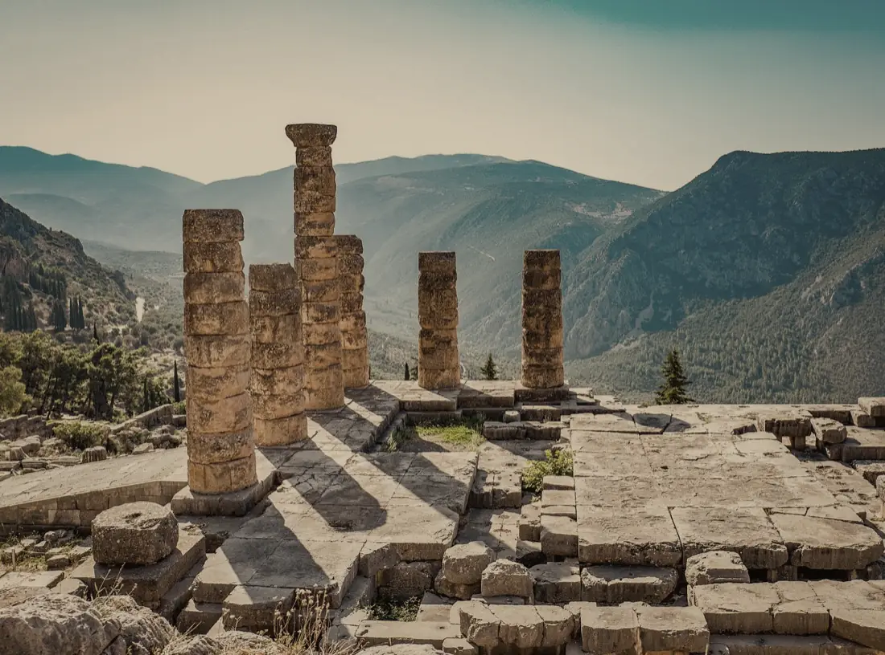
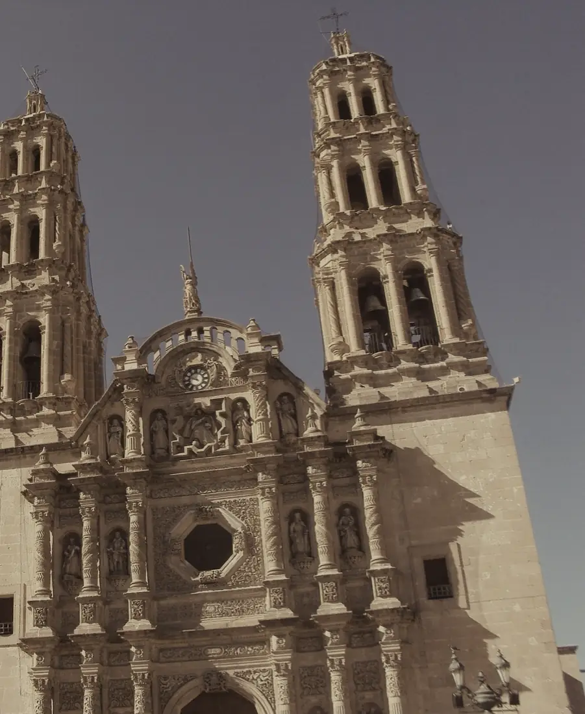

del Aprendiz. Instrucción del Primer Grado, R∴ E∴ A∴ A∴
La piedra

Treinta y tres temas, treinta y tres fragmentos. Cada tema que estudias retira una aspereza, hasta que queda a la vista lo que la piedra siempre llevó dentro.
0 de 33 fragmentos retirados
Instala la Piedra Bruta en tu teléfono. Queda como app en tu pantalla de inicio y funciona sin internet.
Respalda tu bitácora.
Sobre este cuaderno
Este cuaderno acompaña la instrucción del Primer Grado: los 33 temas del Aprendiz, repartidos entre el martillo, la regla y el mandil, para trabajarlos a tu paso.
Para quién. Para los Aprendices de la Resp∴ Log∴ Simb∴ Lázaro Cárdenas No. 8, de la Gran Logia “Cosmos” del Estado de Chihuahua, y para los Maestros que los acompañan en su instrucción.
Qué contiene. Cada tema trae su idea central en tres sentidos, filosófico, moral y esotérico, las páginas del libro donde se estudia y una pregunta para meditar. Los temas reservados se presentan solo en su sentido moral.
Dónde vive. Tu avance y tus notas se guardan únicamente en este dispositivo; no se envían a ningún servidor. Un archivo de respaldo los conserva o los lleva a otro teléfono.
Cómo leerlo. El fragmento que brilla en la piedra es el siguiente en el orden sugerido. Ninguna síntesis sustituye la lectura completa del libro ni la palabra del Taller.
No se le agrega nada a la piedra: solo se le quita lo que sobra.
Así trabaja el Aprendiz. El mandil protege al obrero; el martillo y la regla hacen lo demás.
Γνῶθι σεαυτόν
En el templo de Apolo, en Delfos, una máxima recibía a quien entraba. Esta piedra guarda la misma; aparece palabra por palabra al completar cada prenda de trabajo.

Primero, elige un fragmento.
Toca un fragmento de la piedra o un tema de la bitácora. El que brilla es el siguiente en el orden sugerido.
Luego, estudia el tema.
Lee la idea central, consulta el libro en las páginas indicadas y llévalo a la instrucción en Logia.
Escribe lo que quitaste.
Responde la pregunta y anota lo que hoy quitaste de ti. Descarga un respaldo de vez en cuando.
Retira el fragmento.
Cuando el tema esté trabajado, retíralo. Poco a poco aparecerá la frase oculta.
Bitácoradel cantero

Los 33 temas repartidos entre las tres prendas de trabajo del Aprendiz, once por cada una. El orden de cada lista es el orden sugerido de estudio.
Del autor
a sus Hermanos
Con un T∴ A∴ F∴,
Jesús Antonio Díaz Franco, M∴ M∴
Resp∴ Log∴ Simb∴ Lázaro Cárdenas No. 8
Queridos Hermanos: preparé este material con afecto fraternal, como una ofrenda al Taller y a quienes hoy comienzan a labrar su piedra.
No busco créditos ni reconocimiento. Mi único deseo es que la instrucción que recibimos en Logia pueda acompañarlos también fuera del Templo, al alcance de la mano, cuando más la necesiten.
Lo que aquí encontrarán pertenece a la tradición de nuestra Orden y a los autores citados; mía es solo la voluntad de compartirlo.